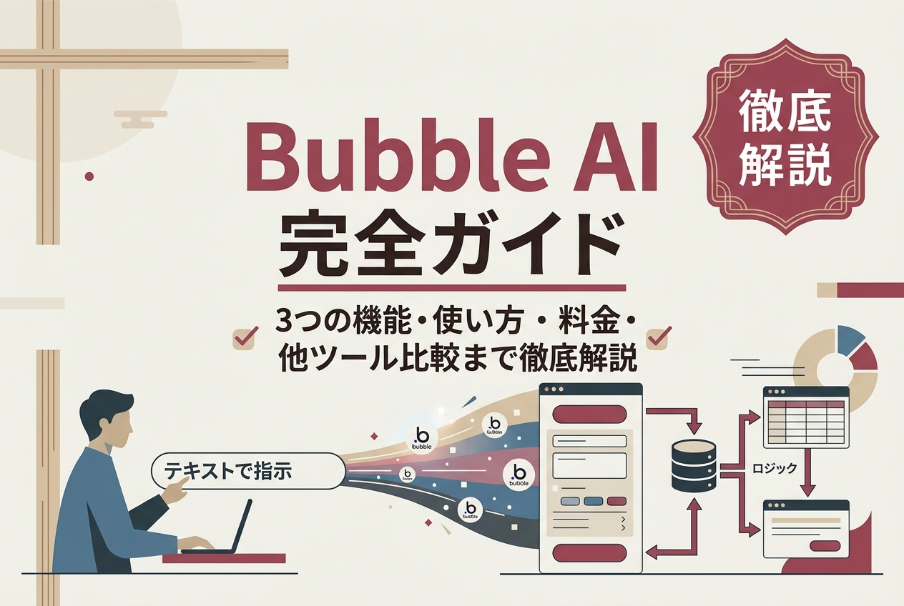
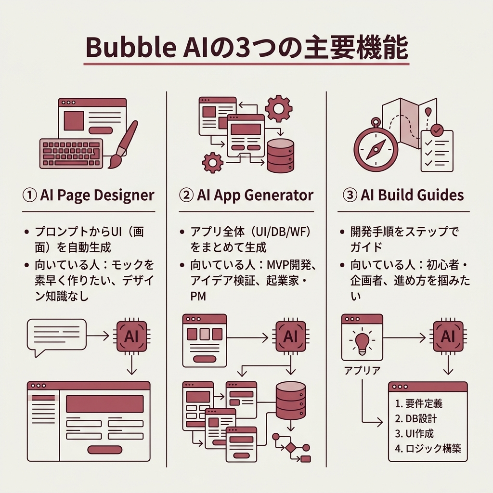
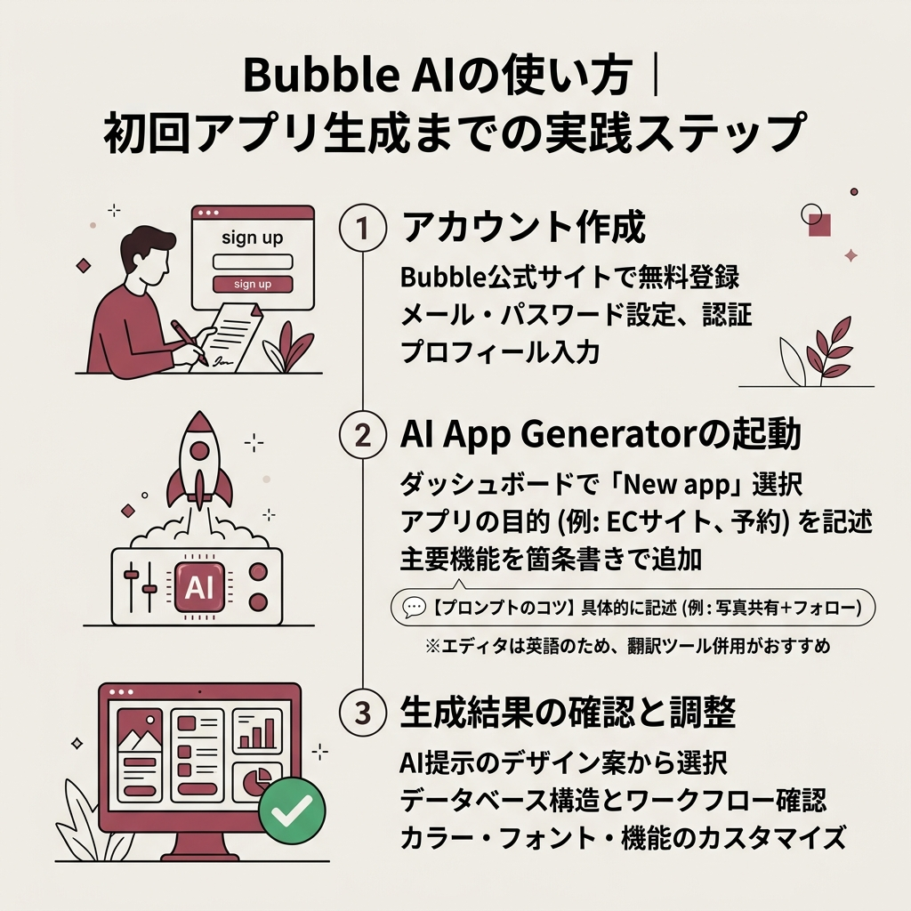
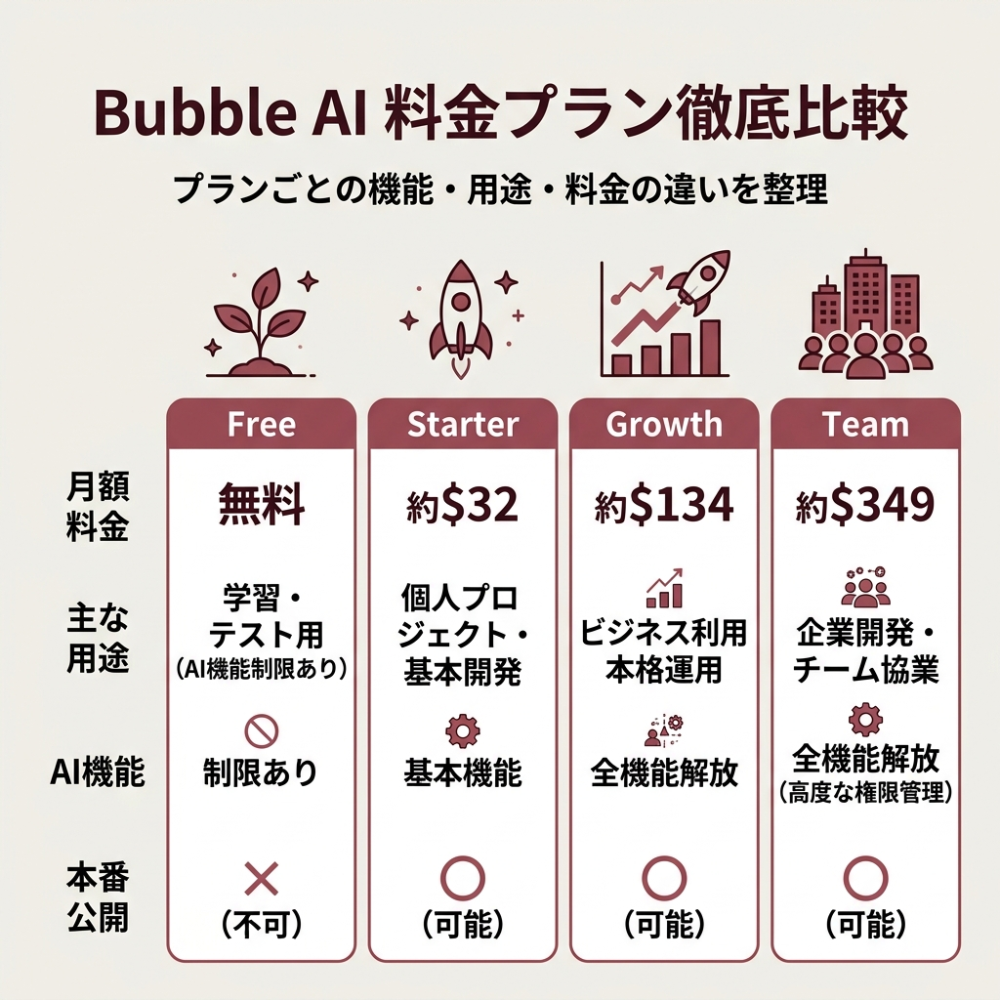

Bubble AI完全ガイド｜3つの機能・使い方・料金・他ツール比較まで徹底解説

ノーコード開発ツール「Bubble」に搭載されたAI支援機能、通称「Bubble AI」。
テキストで指示を出すだけでUIもデータベースもワークフローも一気に組み上がる、という触れ込みですが、実際どこまで使えるのか気になっている方も多いはず。
この記事では、公式発表と主要な解説記事を横断して整理し、Bubble AIの3つの機能・使い方・料金プラン・他のノーコードツールとの違い・導入時の落とし穴までまとめました。
結論から書くと、Bubble AIは「完成品を吐き出すAI」ではなく「たたき台を数分で作るAI」として設計されています。ここを押さえておくと期待値のズレが起きにくいです。
- Bubble AIの3つの機能の違いと使い分け
- AI App Generatorの具体的な操作ステップ
- Free〜Teamまでの料金プランと選び方
- 他ノーコードツールとの比較ポイント
- 導入前に知っておくべき制限と注意点
Bubble AIとは？ノーコード×AIの新しい開発スタイル
 出典: bubble.io
出典: bubble.ioBubble AIは、ノーコード開発プラットフォーム「Bubble」に統合されたAI支援機能の総称です。
テキストによる要件入力からフロントエンドとバックエンドの基盤を自動生成する、「ノーコード＋AI」の先進的プラットフォームと位置付けられています。
従来のBubbleが提供していたビジュアルプログラミング環境に生成AI技術を組み合わせることで、開発プロセスを大幅に効率化する狙いです。
なぜ今Bubble AIが注目されているのか
スタートアップや新規事業の現場では「アイデアはあるけれど開発リソースが足りない」という課題が深刻化しています。
そんな中、Bubble AIはテキストプロンプトの入力だけでMVP（最小限実行可能な製品）を短期間で構築できるソリューションとして注目を集めています。
ノーコードって前からあるのに、わざわざAIを組み合わせる意味はどこにあるの？
「ゼロから画面を組む時間」を数分にまで圧縮できるのが大きな違いです。プロトタイプを当日中に顧客へ見せられる、というスピード感は従来のノーコードにはありませんでした。
AIが自動化する3つの領域
公式ガイドや解説記事をまとめると、Bubble AIが自動化の対象としているのは大きく3つの領域に分かれます。
- UIデザインの自動生成（プロンプトからページUIを生成）
- データベース設計の自動化（要件から最適なテーブル構造を提案）
- ワークフロー構築の補助（ビジネスルールを自然言語で記述）
つまり「画面・データ・ロジック」という開発の3本柱を、それぞれ別のAI機能が支えている構造です。

Bubble AIの3つの主要機能を徹底解説
 出典: swooo.net
出典: swooo.netBubble AIは単一の機能ではなく、用途の違う3つの機能の集合体です。ここを混同すると「使い方がよく分からない」と感じやすいので、最初に役割を整理します。
| 機能名 | 主な役割 | 向いている人 |
|---|---|---|
| AI Page Designer | プロンプトからUI（ページデザイン）を自動生成 | モックを素早く作りたい人 |
| AI App Generator | アプリ全体（UI / DB / ワークフロー）をまとめて生成 | MVP開発やアイデア検証をしたい人 |
| AI Build Guides | 作りたいアプリの開発手順をステップで提示 | 初心者・企画者で進め方を掴みたい人 |
① AI Page Designer：UIを瞬時に組み立てる
 出典: walker-s.co.jp
出典: walker-s.co.jp生成したいページの種類と説明文を伝えると、自動でフロントエンドを組み立ててくれます。
たとえば「会員登録ページを作成」と入力するだけで、フォームフィールド、バリデーション、デザイン要素が一式配置される、といった具合。
デザインの専門知識がなくても、直感的で使いやすい画面を短時間で準備できるのが魅力です。
② AI App Generator：アプリの骨組みをまるごと生成
 出典: corp.omake.co.jp
出典: corp.omake.co.jp「学習管理プラットフォーム」のようにざっくりしたアプリ概要を入力するだけで、レイアウト・テキスト・画像素材・ワークフローまで一括で構築してくれる機能です。
アプリの全体像を素早く把握し、そこから細部をカスタマイズしていく流れが前提になっています。
起業家やプロダクトマネージャーが「動くものを1日で見せたい」ときに特に向いています。
③ AI Build Guides：作る手順そのものをAIがガイド
「InstagramのようなSNSを作りたい」と投げると、必要な機能要件をまとめたガイドをAIが提示してくれる機能です。
何から手を付ければよいか分からない初心者でも、体系的な開発計画に沿って進められます。
アプリの「検索機能」を作りたい場合、Build Guidesは必要なデータベース構造・エレメント・ワークフローをステップバイステップで提案してくれます。ただし、具体的な実装手順までは提示されず、あくまで全体の流れをざっくりガイドするAI機能である点には注意が必要です。
Bubble AIでできること・できないこと
Bubble AIの実力を正しく評価するには、「得意領域」と「苦手領域」の線引きを先に知っておくのが一番の近道です。
上位の解説記事でも強調されているのは、「完成品ではなく開発のベースを作るためのAI」という位置付け。この前提が抜けると、どうしても失望が先に来てしまいます。
現時点でAIが得意な領域
- レスポンシブWebアプリケーションの自動生成
- データベース連携機能の自動設定
- 外部API統合の基盤構築
- ユーザー認証システムの自動実装
- OpenAI（ChatGPT、GPT-3、DALL-E 2、Whisper）などの技術をBubbleアプリに統合
まだ苦手な領域
一方で、現時点では以下のような制限事項が存在します。
- 完成度の高いアプリケーションの完全自動生成は未対応
- 高度なカスタマイズは手動調整が必要
- ネイティブモバイルアプリの直接生成は限定的
- 大量データ処理やリアルタイム処理には制約あり
このあたりを理解したうえで、「どこまでをAIに任せ、どこから人が仕上げるか」を決めるのが実務的なコツです。

Bubble AIの使い方｜初回アプリ生成までの実践ステップ
ここからは、実際にBubble AIを使い始めるまでの手順を見ていきます。AI App Generatorを使う前提で、アカウント作成から生成結果のチェックまでを一気に追っていきましょう。
Bubbleアカウントの作成
Bubble公式サイト（bubble.io）にアクセスし「Sign up for free」をクリック。メールアドレスとパスワードを設定して認証を完了し、基本プロフィール情報を入力します。まずはFreeプランでスタートして問題ありません。
AI App Generatorの起動
ダッシュボードから「New app」を選択し、「AI App Generator」オプションを選びます。アプリの目的（例：ECサイトを作成したい、予約システムが必要など）を明確に記述し、主要機能を箇条書きで追加。ターゲットユーザーや業界も合わせて指定しましょう。
生成結果の確認と調整
「Generate」ボタンで生成を開始するとAIが複数のデザイン案を提示します。最適なレイアウトを選び、自動生成されたデータベース構造とワークフロー設定をチェック。必要に応じてカラーやフォントをカスタマイズし、不要な要素の削除や追加機能の実装を進めていきます。
効果的なプロンプト作成のコツ
AIに投げる指示の質がそのまま生成結果の質に直結します。上位記事で共通して言及されているポイントは以下のとおりです。
具体性を重視するのが最初のルール。「SNSアプリ」ではなく「写真共有機能とフォロー機能を持つSNSアプリ」のように、必要な機能を明確に記載しましょう。
そしてもうひとつが段階的なアプローチ。全体の設計を理解してから詳細機能を追加していく方法が効果的、と複数の解説記事が指摘しています。
日本語で指示を書いても大丈夫？
Bubbleのエディタ自体が英語のみのため、プロンプトも英語で書いた方が安定しやすいです。ブラウザの翻訳機能やGoogle翻訳と併用して進めるのが現実的な運用になります。

Bubble AIの料金プラン｜Free〜Teamまで徹底比較
 出典: chatgpt-enterprise.jp
出典: chatgpt-enterprise.jpBubble AIの機能をどこまで使えるかは料金プランによって大きく変わります。気持ちよく試せるFreeプランから、チーム開発前提のTeamプランまで、一気に整理してしまいましょう。
プラン別の月額料金と特徴
| プラン | 月額料金 | 主な用途 |
|---|---|---|
| Free | 無料 | 学習・テスト用（AI機能は制限あり） |
| Starter | 約$32 | 個人プロジェクト・基本AI機能 |
| Growth | 約$134 | ビジネス利用・全AI機能 |
| Team | 約$349 | 企業開発・チーム協業 |
AI機能は主に有料プラン（Starter以上）で利用できる設計で、Freeプランでは機能制限があり本番公開はできません。無料トライアル期間を賢く使いながら、用途に合うプランを選ぶのがセオリーです。
用途別のおすすめプランの選び方
個人の学習やプロトタイピングなら、まずはFreeプランからのスタートが鉄板です。
実際に開発したアプリを公開する段階になったら、有料プランに切り替えていけば十分。小さく始めて大きく育てる、ノーコードらしい運用ができます。
一方、ビジネス利用や本格運用を見据えるならGrowth以上が現実的。セキュリティ設定、バージョン管理、複数のサブアプリ機能といった大規模運用向けの機能が揃っているためです。
- AI Page Designer / AI App Generatorなど全AI機能が解放される
- 本番公開が可能になり、ユーザーに届けられる状態になる
- Growth以上ならチーム開発や権限管理まで対応できる
- 年単位では十万円規模の固定費になり得る
- プランごとに使えるAI機能の範囲が変わる
- ワークロードの使用量によって追加課金が発生するケースもある
他ノーコードツールとの比較｜Bubble AIの立ち位置
Bubble AIの良し悪しは、他のノーコードツールと横並びで見たときに一番よく分かります。上位記事で言及されていた主要ツールと、その関係を整理しました。
主要ノーコードツールとの機能比較
| 項目 | Bubble AI | Adalo | FlutterFlow | Glide |
|---|---|---|---|---|
| AI支援機能 | 包括的 | 限定的 | 部分的 | 基本的 |
| カスタマイズ性 | 非常に高い | 中程度 | 高い | 制限あり |
| 学習難易度 | やや高い | 低い | 中程度 | 非常に低い |
| 開発可能範囲 | Webアプリメイン | モバイル特化 | マルチプラットフォーム | シンプルアプリ |
Bubble AIを選ぶべき理由
GlideやAdaloよりも自由度が高く、OutSystemsほどの初期コストもかからない。このバランスがBubble AIを選ぶ最大の理由として複数の解説記事で挙げられています。
初心者が扱いやすい反面、高度なワークフロー設計も可能で、拡張性が十分に備わっているのが大きな優位性です。
GlideやAdaloよりも自由度が高く、OutSystemsほどの初期コストもかかりません。初心者が扱いやすい反面、実は高度なワークフロー設計も可能で、拡張性は十分な点が大きな優位性となっています。
株式会社おまけ「Bubble AI完全ガイド」より要約
Bubble AIを導入する前に知っておきたい注意点
機能面は強力なBubble AIですが、日本のユーザーが使い始めるうえで「事前に知っておくとダメージが少ない」ポイントがいくつかあります。
学習コストと日本語非対応のハードル
Bubbleは機能が非常に豊富なぶん、他のノーコードツールに比べると覚えることが多いのが特徴です。段階的な学習計画を立てずに飛び込むと、途中で詰まりがちです。
さらに、エディタやサポートページを含めて日本語に対応していません。翻訳ツールやコミュニティリソースを併用する前提で進めるのが安全です。
AI生成結果をそのまま使ってはいけない理由
上位記事が口を揃えて強調しているのが、「生成結果は完成品ではなく、あくまで開発のベースとなる構造」という点です。
詳細なカスタマイズは手動調整が必要ですし、複雑な機能は段階的に追加していく姿勢が欠かせません。
本番環境でのデータ取り扱いには十分注意が必要です。個人情報や機密データの管理ルールを事前に確認し、バックアップ設定を忘れずに実施しましょう。商用利用の場合は利用規約の詳細確認も必須です。
公式発表から読み解くアップデート状況とロードマップ
Bubble AIは現在進行形で進化しているプロダクトです。ここでは2025年12月時点の公式発表をベースに、直近の実装内容とその後のロードマップを整理します。
2025年12月時点で実装済みの主要機能
目玉のひとつが、2025年11月にBubble AI Agentへ実装された「AI式生成機能」。動的な式が必要な要素を構築する際に、Agentが自動的に動的式を作成してくれるようになりました。
たとえば「現在のユーザーが完了したタスクのリストを検索する繰り返しグループの式を生成して」といった自然言語の指示で式を組み立てられるイメージです。
加えて、ネイティブモバイルアプリ向けのAI生成機能がベータ版として提供開始されており、モバイル領域もAI支援で効率化できる段階に入りました。
公式が示していた2026年前半のロードマップ
2025年12月時点でBubbleが公表していた2026年前半のロードマップは、かなり意欲的な内容でした。最新の進捗は公式サイトでの確認をおすすめします。
- データタイプ自動生成機能（Agentがフロントとバックエンドの両方に変更を加えられるようになる）
- ワークフロー生成機能（2026年1月末のリリース目標として公表、Agentが真のフルスタック対応に）
- プロパティエディタの刷新（色変数名の表示や条件分岐の命名など多数の摩擦点を解消）
- アプリ内課金機能（2026年2月に、Apple・Googleのサブスクリプション処理対応を目指すと発表）
数字で見るBubbleの現在地
ビジネス面の実績も、無視できない水準に育っています。
Stripe社との提携で計測された2025年の取引データでは、Bubbleで構築されたアプリを通じて11億ドル以上の取引が処理されたと公式発表されています。
Bubble AIの導入事例｜スタートアップと社内開発の動き
上位記事には、Bubble AIを活用した具体的な事例もいくつか紹介されていました。固有名詞ではなく「動き方」にフォーカスして整理しています。
Bubble AIのよくある質問（FAQ）
結局、いまBubble AIに飛び込むのってアリ？
「MVPを最短で出したい」「アイデアをすぐ触れる形にしたい」人にとっては、現時点でもかなり強い武器になります。完成品を期待するのではなく、骨組みを爆速で作るための道具として捉えるのがコツです。
まとめ｜Bubble AIは「骨組みを爆速で作るAI」と割り切ると強い
- Bubble AIは「AI Page Designer」「AI App Generator」「AI Build Guides」の3機能で構成される
- 完成品ではなく「たたき台」を短時間で作るためのAIと捉えるのが正解
- AI機能は有料プラン（Starter以上）が前提で、Freeプランでは制限が大きい
- GlideやAdaloより自由度が高く、OutSystemsほどの初期コストもかからないバランス型
- 日本語非対応・手動調整の必要性といった前提を理解して使うとミスマッチが起きにくい
- 2025年11月のAI式生成、2026年前半のワークフロー生成などロードマップも積極的
Bubble AIを触ってみて感じるのは、「AIに全部任せる時代」ではなく「AIと人で分担する時代」がもう始まっているという感覚です。
まずはFreeプランで一度AI App Generatorを動かしてみると、自分の案件に向いているかどうかの判断が一番早くつくはずです。